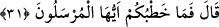

sağlamdır.
Bir kimse ki senin işini senden daha iyi bilir
Onun bunu tamamlamaya daha çok gücü yeter.
Başka tarafa yönelip onun dergâhından başkasına yüz sürme,
Gönlünün muradını sadece onda ara, O sana yeter.
Rivâyet edildiğine göre Cibril (a.s) Sâre’ye gelerek ondan evinin çatısına bakmasını
istemiş. O da bakmış, ama bir de ne görsün?! Çatısında yaprağı ve yemişi olan hurma
dalları duruyormuş. Bu olay üzerine çocuğu olacağına yakînen inanmış.
Bu yardım sadece Sâre’ye olmamıştır. Allah, İbrahim (a.s)’a da Hicr sûresinde
açıklandığı şekilde yardımda bulunmuştur. Ancak Hicr sûresinde zikredilenlerle iktifâ
edilmesi için burada onları bir daha zikretmemiştir. Yine burada Sâre’den bahsettiği
için de Hicr ve Hûd sûrelerinde Sâre’yi zikretmemiş, buradakiyle iktifâ etmiştir.
Bu âyet Allah Teâlâ’nın fazlından ümid kesmemeye de işâret etmektedir. Zîra,
takdirde olan, geç de olsa, mutlaka gerçekleşecektir. Yine Meryem (a.s)’ın yanında
durduğu ağaç da yapraklanıp meyvalanmamış mıydı? Halbuki o ağaç Meryem sûresinde
geçtiği üzere “kuru (meyvesiz) bir haldeydi.” (Meryem 19/25)
İşte bu tasavvuf yoluyla pek çok kimse, ancak ileri yaşlarında iştiğal etmeye başlamış,
ama onlar bu hususta akranlarını geride bırakmışlardır. Yine başlangıçta tasavvuftan
mahrum olan bazı kimseler daha sonra onunla rızıklandırılmışlardır ki; İbrahim b.
Edhem, Fudayl b. İyâd ve Mâlik b. Dînar onlardandır. Onlar her ne kadar geçici şartlar
sebebiyle fıtrat-ı asliyelerinden uzaklaşmış olsalar da, haklarında inâyet-i İlâhiye
tahakkuk ettiği için Allah Teâlâ’ya doğru cezbedilmişler, O’na takarrûb ederek
fıtratlarındaki pislikleri yok etmeye kadir olmuşlardır. Kim de Allah Teâlâ’nın kudretini
âciz görürse o küfre girmiştir.
Bazıları şöyle demiştir: Kırkından sonra sûfi olan ölü ve meyvesiz bir ağaç gibidir.
Zîra o her şeyi Allah’tan bekler. Kırk yaşından sonra mizaç, kuruluk ve donukluğun
kendisine galebesi sebebiyle bir çöküşle karşılaşır. Fakat dirilten ve öldüren Allah’tır.
Bu sebeple Allah, küçük yaşta yâni kişinin gençlik çağlarında öldürdüğü fıtrat-ı
asliyesini ileri yaşında diriltir ve gençliğinde canlı bir halde olan kişinin nefsini bu
halden sonraki ileri yaşına girince de öldürmek sûretiyle küçükken dirilttiğini büyükken
öldürebilir. Yine, bir kimsenin kalbi gençlikte ölü iken Yüce Allah ileri yaşta onu
diriltmeye de kâdirdir. Yalnız Allah’tan bol feyz ve ihsân umarız.
31. (İbrahim:) O halde işiniz nedir, ey elçiler? dedi.
İbrahim (a.s) onların azap işi için gönderilmiş melekler olduğunu anlayınca “O halde